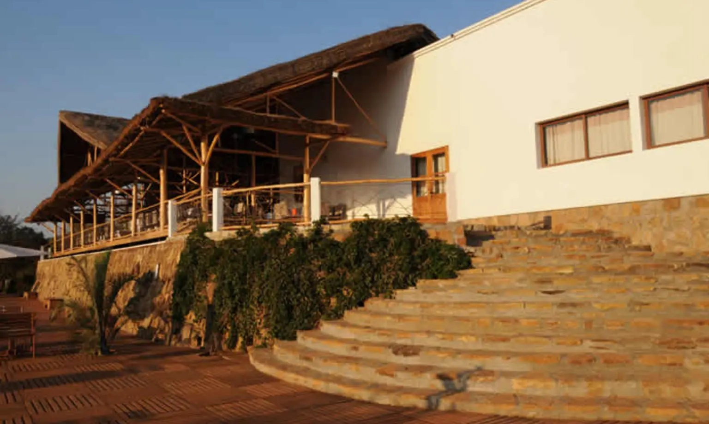

Nous avons pensé chaque détail de la construction du lodge Soleil des Tsingy pour conserver la canopée alentour. À la pose de la première pierre en 2010 s’ensuit toute une série de travaux de conservation, dont le repiquage de 5000 arbres et arbustes.
L’envie de mettre à profit notre terrain par amour pour Madagascar nous a poussés à édifier l’hôtel le Soleil des Tsingy près du parc des Tsingy du Bemaraha. Pour nous, le site représente l’île Rouge dans toute sa diversité avec la présence de nombreuses espèces de lémuriens, des baobabs aux formes insolites et par-dessus tout le grand massif des Tsingy, unique au monde.
l'’origine du nom de cet hôtel à Bekopaka réside dans sa finalité première : accueillir les amateurs d’aventures près du parc de Bemaraha dans un confort irréprochable avec en prime un soleil couchant spectaculaire.
Nos équipements haut de gamme et notre philosophie de développer une infrastructure hôtelière en symbiose avec la nature environnante nous permettent de satisfaire tous les besoins d’une clientèle de plus en plus exigeante.
L’hôtel Soleil des Tsingy a été inauguré le 1er juillet 2013. La singularité de ce lodge repose en outre sur ses équipements et décorations façonnés minutieusement par la main de l’homme. Des cinq puits acheminant l’eau dans chaque bungalow, aux meubles en bois précieux et objets de décoration en fer forgé, nous avons fait appel à de talentueux artisans locaux pour chaque mètre carré de nos espaces de vie. Tous les matériaux de construction et les équipements de l’hôtel ont par ailleurs été acheminés d’Antananarivo ou de Morondava via la piste, non sans casse !
L’hôtel Soleil des Tsingy ouvre ses portes en saison sèche, de mai à novembre. La piste conduisant au parc des Tsingy du Bemaraha est en effet inaccessible en saison pluvieuse.